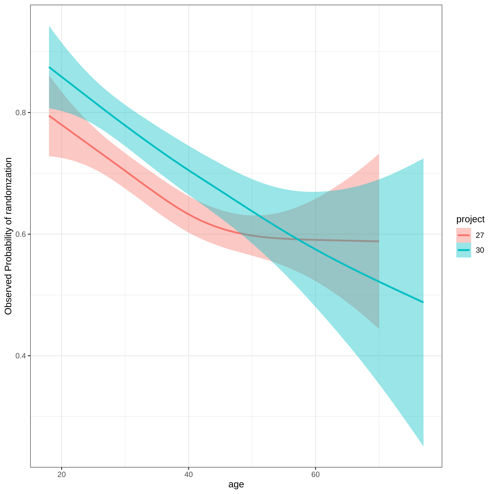

R/Medicine 2024 Data Challenge
1 INTRODUCTION
This is my attempt at the analyses requested in https://rconsortium.github.io/RMedicine_website/Competition.html. I focused on identifying predictive factors associated with two questions.
Of the potential patients providing data, what factors were associated with succesful randomization?
Defining compliance as the % of potential study weeks where a patient showed up with a negative test, what factors were associated with higher compliance?
Show the code
# load data and packages
require(tidyverse)
require(public.ctn0094data)
require(public.ctn0094extra)
require(pROC)
require(ggeffects)
require(kableExtra)
require(broom)
require(rms)
require(betareg)
require(scales)
require(emmeans)
require(marginaleffects)2 SUCCESSFUL RANDOMIZATION
Of the patients listed in ‘everybody’ which ones are successfully randomized (‘randomization’)?
Show the code
# create wide table of drug usage
data_ls <- loadRawData(c("randomization", "treatment", "rbs", "demographics", "everybody"))
rbs_wide <-
data_ls$rbs %>%
mutate(value = case_when(did_use == "Yes" ~ 1, did_use == "No" ~ 0)) %>%
dplyr::select(who, what, value) %>%
right_join(data_ls$everybody %>% dplyr::select(who)) %>%
mutate(value = case_when(is.na(value) ~ 0, TRUE ~ value)) %>%
pivot_wider(names_from = what, values_fill = 0) %>%
mutate(total_reported_drugs = cocaine + heroin + speedball + opioid + speed) %>%
dplyr::select(-`NA`) %>%
mutate(total_reported_drugs = as.factor(total_reported_drugs))
randomization_tbl <-
data_ls$demographics %>%
left_join( data_ls$randomization %>% filter(which == 1)) %>%
mutate(randomization = as.factor(case_when(is.na(which) ~ "0", TRUE ~ which))) %>%
inner_join(rbs_wide) %>%
mutate(job = as.factor(case_when(is.na(job) ~ "Missing", TRUE ~ job))) %>%
mutate(is_living_stable = as.factor(case_when(is.na(is_living_stable) ~ "Missing", TRUE ~ is_living_stable))) %>%
mutate(education = as.factor(case_when(is.na(education) ~ "Missing", TRUE ~ education))) %>%
mutate(marital = as.factor(case_when(is.na(marital) ~ "Missing", TRUE ~ marital))) %>%
mutate(job = fct_relevel(job, "Missing", after = Inf)) %>%
mutate(is_living_stable = fct_relevel(is_living_stable, "Missing", after = Inf)) %>%
mutate(education = fct_relevel(education, "Missing", after = Inf)) %>%
mutate(marital = fct_relevel(marital, "Missing", after = Inf)) %>%
mutate(cocaine = as.factor(cocaine), heroin = as.factor(heroin), speedball = as.factor(speedball), opioid = as.factor(opioid), speed = as.factor(speed)) %>%
inner_join(everybody)
# use optimum penalty of 1 determined manually using 'pentrace'
lrm_randomization <-
lrm(randomization ~ pol(age, 2) + job + education + marital + is_male + is_hispanic + race + total_reported_drugs + heroin + speedball + opioid, randomization_tbl, x = TRUE, y = TRUE, penalty = 1)
cat("\n\n## Use bootstrap validation to determine what values are persistent\n\n")2.1 Use bootstrap validation to determine what values are persistent
Show the code
cat("\n\n'Total reported drugs' is cocaine + speed + speedball + opioid + heroin as 0/1 from rbs\n\n")‘Total reported drugs’ is cocaine + speed + speedball + opioid + heroin as 0/1 from rbs
Show the code
validate_randomization <- validate(lrm_randomization, B = 200, bw = TRUE) Backwards Step-down - Original ModelDeleted Chi-Sq d.f. P Residual d.f. P AIC
job 0.23 5 0.9988 0.23 5 0.9988 -9.77 education 2.69 3 0.4427 2.92 8 0.9395 -13.08 is_hispanic 0.11 1 0.7370 3.03 9 0.9632 -14.97 is_male 0.17 1 0.6795 3.20 10 0.9763 -16.80 speedball 1.84 1 0.1749 5.04 11 0.9293 -16.96 race 8.97 3 0.0297 14.01 14 0.4493 -13.99 heroin 6.24 1 0.0125 20.25 15 0.1627 -9.75 opioid 5.43 1 0.0198 25.68 16 0.0587 -6.32
Approximate Estimates after Deleting Factors
Coef S.E. Wald Z PIntercept 0.2726217 0.6201659 0.4396 6.602e-01 age -0.0731720 0.0295826 -2.4735 1.338e-02 age^2 0.0005492 0.0003716 1.4780 1.394e-01 marital=Never married 0.1830554 0.2178662 0.8402 4.008e-01 marital=Separated/Divorced/Widowed 0.2124224 0.2446399 0.8683 3.852e-01 marital=Missing -0.9641235 0.1857561 -5.1903 2.100e-07 total_reported_drugs=1 3.7372456 0.2154768 17.3441 0.000e+00 total_reported_drugs=2 3.6986121 0.2124678 17.4079 0.000e+00 total_reported_drugs=3 3.6472251 0.2211314 16.4935 0.000e+00 total_reported_drugs=4 3.8151182 0.2815350 13.5511 0.000e+00 total_reported_drugs=5 3.4882191 0.4293229 8.1249 4.441e-16
Factors in Final Model
[1] age marital total_reported_drugs
Show the code
summary(attr(validate_randomization, "kept")) %>%
kable() %>%
kable_styling()| age | job | education | marital | is_male | is_hispanic | race | total_reported_drugs | heroin | speedball | opioid | |
|---|---|---|---|---|---|---|---|---|---|---|---|
| Mode :logical | Mode :logical | Mode :logical | Mode :logical | Mode :logical | Mode :logical | Mode :logical | Mode:logical | Mode :logical | Mode :logical | Mode :logical | |
| FALSE:1 | FALSE:199 | FALSE:180 | FALSE:15 | FALSE:197 | FALSE:187 | FALSE:137 | TRUE:200 | FALSE:142 | FALSE:182 | FALSE:121 | |
| TRUE :199 | TRUE :1 | TRUE :20 | TRUE :185 | TRUE :3 | TRUE :13 | TRUE :63 | NA | TRUE :58 | TRUE :18 | TRUE :79 |
Show the code
lrm_final <- lrm(randomization ~ pol(age, 2) + marital + total_reported_drugs, randomization_tbl, x = TRUE, y = TRUE, penalty = 1)
randomization_tbl$predict_randomization <- predict(lrm_final, type = "fitted")
cat("\n\n## Project 51 has almost perfect predicted randomization compared to other two (age not reported for non-randomized 51 patients)\n\n")2.2 Project 51 has almost perfect predicted randomization compared to other two (age not reported for non-randomized 51 patients)
Show the code
ggemmeans(update(lrm_final,.~.+project),"project") %>% as.data.frame() %>% dplyr::select(project=x, predicted, conf.low, conf.high) %>% kable() %>% kable_styling()| project | predicted | conf.low | conf.high |
|---|---|---|---|
| 27 | 0.6509355 | 0.5791867 | 0.7164402 |
| 30 | 0.7240205 | 0.6693301 | 0.7727367 |
| 51 | 0.9940233 | 0.9824580 | 0.9979793 |
Show the code
cat("\n\n## Use bootstrap validtion to determine what values are persistent\n\n")2.3 Use bootstrap validtion to determine what values are persistent
Show the code
coef <- coefficients(lrm_final)
se <- sqrt(diag(vcov(lrm_final)))
cat("\n\n## Final logistic regression model predicting successful randomization (log-odds)\n\n")2.4 Final logistic regression model predicting successful randomization (log-odds)
Show the code
cat("\n\n(factor reference levels based on alphabetical order)\n\n")(factor reference levels based on alphabetical order)
Show the code
tibble(term = names(coef), coef, se) %>%
mutate(p = 2 * case_when(coef > 0 ~ pnorm(coef / se, lower.tail = FALSE), TRUE ~ pnorm(coef / se, lower.tail = TRUE))) %>%
kable() %>%
kable_styling() %>%
pack_rows("Marital (ref level Married or Partnered)", 4, 6) %>%
pack_rows("Total Reported Drugs (reference level 0)", 7, 11)| term | coef | se | p |
|---|---|---|---|
| Intercept | 0.1741456 | 0.6158886 | 0.7773647 |
| age | -0.0722803 | 0.0294367 | 0.0140707 |
| age^2 | 0.0005367 | 0.0003702 | 0.1471491 |
| Marital (ref level Married or Partnered) | |||
| marital=Never married | 0.1860933 | 0.2177973 | 0.3928649 |
| marital=Separated/Divorced/Widowed | 0.2180355 | 0.2447502 | 0.3730099 |
| marital=Missing | -0.9700294 | 0.1860135 | 0.0000002 |
| Total Reported Drugs (reference level 0) | |||
| total_reported_drugs=1 | 3.8333471 | 0.2133380 | 0.0000000 |
| total_reported_drugs=2 | 3.8023090 | 0.2102814 | 0.0000000 |
| total_reported_drugs=3 | 3.7605650 | 0.2188092 | 0.0000000 |
| total_reported_drugs=4 | 3.9294689 | 0.2790591 | 0.0000000 |
| total_reported_drugs=5 | 3.5772414 | 0.4260219 | 0.0000000 |
Show the code
calibrate_final <- calibrate(lrm_final, B = 200)
calibrate_tbl <-
calibrate_final[, c("predy", "calibrated.orig", "calibrated.corrected")] %>%
as_tibble() %>%
pivot_longer(calibrated.orig:calibrated.corrected)
cat("\n\n## Show calibration (predicted vs actual) for predictive model of randomization\n\n")2.5 Show calibration (predicted vs actual) for predictive model of randomization
Show the code
calibrate_tbl %>%
ggplot(aes(x = predy, y = value, color = name)) +
geom_line(linewidth = 1) +
theme_bw() +
labs(color = "calibration", x = "Predicted Probability", y = "Actual Probability") +
theme(legend.position = c(0.8, 0.2)) +
geom_abline(linetype = "dashed")
Show the code
auc <- ci.auc(roc(randomization ~ predict_randomization, data = randomization_tbl %>% filter(!is.na(predict_randomization))))
cat(sprintf("\n\n## ROC curve AUC is %0.2f (95 percent CI %0.2f - %0.2f)\n\n", auc[2], auc[1], auc[3]))2.6 ROC curve AUC is 0.81 (95 percent CI 0.79 - 0.83)
Show the code
plot(roc(randomization ~ predict_randomization, data = randomization_tbl %>% filter(!is.na(predict_randomization))))
Show the code
cat("\n\n")Show the code
cat("\n\n## Estimated marginal means\n\n")2.7 Estimated marginal means
Show the code
cat("\n\n### Marital\n\n")2.7.1 Marital
Show the code
plot(ggemmeans(lrm_final, "marital"))
Show the code
cat("\n\n")Show the code
test_predictions(lrm_final, "marital") %>%
kable() %>%
kable_styling()| marital | Contrast | conf.low | conf.high | p.value |
|---|---|---|---|---|
| Married or Partnered-Never married | -0.0252404 | -0.0824855 | 0.0320046 | 0.3874862 |
| Married or Partnered-Separated/Divorced/Widowed | -0.0298955 | -0.0961135 | 0.0363225 | 0.3762287 |
| Married or Partnered-Missing | 0.0870519 | 0.0348838 | 0.1392201 | 0.0010734 |
| Never married-Separated/Divorced/Widowed | -0.0046551 | -0.0666364 | 0.0573262 | 0.8829721 |
| Never married-Missing | 0.1122923 | 0.0624778 | 0.1621069 | 0.0000100 |
| Separated/Divorced/Widowed-Missing | 0.1169474 | 0.0563531 | 0.1775418 | 0.0001551 |
Show the code
cat("\n\n### Total reported drugs\n\n")2.7.2 Total reported drugs
Show the code
plot(ggemmeans(lrm_final, "total_reported_drugs"))
Show the code
cat("\n\n")Show the code
test_predictions(lrm_final, "total_reported_drugs") %>%
kable() %>%
kable_styling()| total_reported_drugs | Contrast | conf.low | conf.high | p.value |
|---|---|---|---|---|
| 0-1 | -0.7408890 | -0.7933182 | -0.6884598 | 0.0000000 |
| 0-2 | -0.7378239 | -0.7897550 | -0.6858928 | 0.0000000 |
| 0-3 | -0.7335837 | -0.7869992 | -0.6801682 | 0.0000000 |
| 0-4 | -0.7499212 | -0.8116047 | -0.6882376 | 0.0000000 |
| 0-5 | -0.7132936 | -0.8138319 | -0.6127554 | 0.0000000 |
| 1-2 | 0.0030651 | -0.0206425 | 0.0267727 | 0.7999593 |
| 1-3 | 0.0073053 | -0.0197899 | 0.0344004 | 0.5971954 |
| 1-4 | -0.0090321 | -0.0490508 | 0.0309865 | 0.6582287 |
| 1-5 | 0.0275954 | -0.0627017 | 0.1178925 | 0.5491874 |
| 2-3 | 0.0042402 | -0.0220300 | 0.0305104 | 0.7517362 |
| 2-4 | -0.0120972 | -0.0516237 | 0.0274293 | 0.5486031 |
| 2-5 | 0.0245303 | -0.0654250 | 0.1144856 | 0.5930158 |
| 3-4 | -0.0163374 | -0.0578999 | 0.0252251 | 0.4410482 |
| 3-5 | 0.0202901 | -0.0704499 | 0.1110301 | 0.6611965 |
| 4-5 | 0.0366275 | -0.0585622 | 0.1318173 | 0.4507509 |
Show the code
cat("\n\n### Age\n\n")2.7.3 Age
Show the code
plot(ggemmeans(lrm_final, "age[all]"))
Show the code
cat("\n\n### Age (per project, not counting 51)\n\n")2.7.4 Age (per project, not counting 51)
Show the code
ggplot(randomization_tbl,aes(x=age, color=project, fill=project, y=as.numeric(as.character(randomization)))) + geom_smooth() + theme_bw() + labs(y="Observed Probability of randomzation")
3 ATTENDANCE AND COMPLIANCE POST-RANDOMIZATION
This adapts the code from ‘public.ctn0094extra’ vignette to summarise substance use across weeks.
I define compliance as how many times the patient showed up with a negative UDS report, divided by the length of time in the study (Study Week + 1 for Baseline). Attendance is how many times the patient showed up with a report (positive or negative), divided by length of time in the study.
Beta regression is used to create a parsimonious model, pruned “by hand” to get rid of irrelevant predictors. The correlation coefficients for these models are not good (R-squared < 0.03) but there may be some insight into how to get better attendance or compliance for patients
Show the code
data_ls <- loadRawData(c("randomization", "treatment"))
data_ls$randomization <-
data_ls$randomization %>%
select(who, when, treatment, randomized = which) %>%
# Remove second randomization events
filter(randomized != 2)
data_ls$treatment <-
data_ls$treatment
start_int <- c(`27` = -30L, `51` = -30L)
end_int <- c(`27` = 168L, `51` = 168L)
backbone2751_df <-
CreateProtocolHistory(
start_vec = start_int,
end_vec = end_int
)
backbone30_df <-
randomization %>%
full_join(everybody, by = "who") %>%
filter(project == "30") %>%
CreateCTN30ProtocolHistory() %>%
mutate(project = "30") %>%
select(who, project, when)
backbone_df <-
bind_rows(backbone2751_df, backbone30_df) %>%
arrange(who)
rm(backbone2751_df, backbone30_df, start_int, end_int)
data_ls <- loadRawData(c("randomization", "visit"))
data_ls$randomization <-
data_ls$randomization %>%
select(who, when, treatment, randomized = which) %>%
# Remove second randomization events
filter(randomized != 2)
data_ls$visit <-
data_ls$visit
timelineRand1_df <-
data_ls$randomization %>%
mutate(randomized = randomized == "1") %>%
# Join to backbone and arrange within subject by day
full_join(backbone_df, by = c("who", "when")) %>%
group_by(who) %>%
arrange(when, .by_group = TRUE) %>%
select(who, project, when, randomized)
timelineVisit1_df <-
data_ls$visit %>%
select(who, when, visit, status = what) %>%
filter(status %in% c("visit", "final")) %>%
mutate(visit = TRUE) %>%
select(who, when, visit) %>%
left_join(timelineRand1_df, ., by = c("who", "when")) %>%
distinct()
timelineMissing1_df <- MarkMissing(timelineVisit1_df)
derived_visitImputed <-
timelineMissing1_df %>%
mutate(visit = as.character(visit)) %>%
replace_na(list(visit = "", visitYM = "")) %>%
mutate(visitImputed = paste0(visit, visitYM)) %>%
mutate(
visitImputed = str_replace(
visitImputed,
pattern = "TRUETRUE", replacement = "Present"
)
) %>%
select(who, when, visitImputed) %>%
filter(visitImputed != "") %>%
ungroup()
randomized_df <-
randomization %>%
mutate(randomized = as.integer(as.character(which))) %>%
select(who, when, randomized) %>%
left_join(everybody, by = "who") %>%
filter(!(randomized == 2 & project %in% c("27", "51"))) %>%
select(-project)
udsUse2_df <-
backbone_df %>%
left_join(randomized_df, by = c("who", "when")) %>%
left_join(derived_visitImputed, by = c("who", "when")) %>%
left_join(uds, by = c("who", "when")) %>%
# So we can use MarkUse() with UDS data (instead of all_drugs)
mutate(source = "UDS")
rm(
backbone_df, data_ls, timelineMissing1_df, timelineRand1_df, timelineVisit1_df
)
nonStudyOpioids_ls <- list(
"Buprenorphine" = c("Opioid", "Methadone"),
"Methadone" = c("Opioid", "Buprenorphine"),
"Naltrexone" = c("Opioid", "Methadone", "Buprenorphine"),
"Not treated" = c("Opioid", "Methadone", "Buprenorphine")
)
treatGroups_ls <-
randomization %>%
filter(which == 1) %>%
left_join(everybody, by = "who") %>%
select(who, treatment) %>%
mutate(
treat_drug = case_when(
str_detect(treatment, "BUP") ~ "Buprenorphine",
treatment == "Methadone" ~ "Methadone",
treatment == "Inpatient NR-NTX" ~ "Naltrexone"
)
) %>%
select(-treatment) %>%
split(f = .$treat_drug) %>%
map(.f = "who")
opioidUse_df <-
udsUse2_df %>%
mutate(
treat_group = case_when(
who %in% treatGroups_ls$Buprenorphine ~ "Buprenorphine",
who %in% treatGroups_ls$Methadone ~ "Methadone",
who %in% treatGroups_ls$Naltrexone ~ "Naltrexone",
TRUE ~ "Not treated"
)
) %>%
split(f = .$treat_group) %>%
# List of data in alphabetical order, so the non-study drugs ls should match
map2(
.y = nonStudyOpioids_ls,
.f = ~ {
# REQUIRES "source" COLUMN
MarkUse(
targetDrugs_char = .y,
drugs_df = .x,
# because we have participants with no recorded UDS; in practice DO NOT
# use this command
retainEmptyRows = TRUE
)
}
) %>%
bind_rows() %>%
mutate(
udsOpioid = case_when(
is.na(when) ~ NA,
!is.na(when) ~ TRUE
)
) %>%
select(who, when, udsOpioid)
timelineUDS_df <-
udsUse2_df %>%
left_join(opioidUse_df, by = c("who", "when")) %>%
select(-what, -source) %>%
# 2,089 rows to 1,994
distinct()
rm(
derived_visitImputed, opioidUse_df, randomized_df, treatGroups_ls, udsUse2_df
)
wasRandomized_int <-
timelineUDS_df %>%
group_by(who) %>%
summarise(randomized = any(randomized %in% 1:2)) %>%
filter(randomized) %>%
pull(who)
notRandomized_int <-
timelineUDS_df %>%
filter(!(who %in% wasRandomized_int)) %>%
pull(who) %>%
unique()
timelineUDS2_df <-
timelineUDS_df %>%
filter(who %in% wasRandomized_int) %>%
group_by(who) %>%
filter(!is.na(randomized)) %>%
mutate(
whenRandomized1 = case_when(randomized == 1 ~ when),
whenRandomized2 = case_when(randomized == 2 ~ when)
) %>%
select(who, when, whenRandomized1, whenRandomized2) %>%
left_join(timelineUDS_df, ., by = c("who", "when")) %>%
filter(who %in% wasRandomized_int) %>%
# Add back in the groupings BEFORE the fill()
group_by(who) %>%
fill(whenRandomized1, .direction = "updown") %>%
fill(whenRandomized2, .direction = "updown") %>%
mutate(daysSinceRand1 = when - whenRandomized1) %>%
mutate(daysSinceRand2 = when - whenRandomized2) %>%
select(-whenRandomized1, -whenRandomized2)
weeklyUse_df <-
timelineUDS2_df %>%
# The (daysSinceRand1 - 1) adjustment is to ensure that the first study week
# is a full 7 days, since "day 0" is the day before randomization. The "+1"
# at the end is to shift the study week label such that "week 0" is the
# week *BEFORE* treatment, rather than the first week of treatment. So, the
# randomization day is the last day of "week 0" (the pre-treatment period).
mutate(studyWeek1 = (daysSinceRand1 - 1) %/% 7 + 1) %>%
mutate(studyWeek2 = (daysSinceRand2 - 1) %/% 7 + 1) %>%
group_by(who, studyWeek1) %>%
# There are some study weeks with multiple UDS, so we count the number of
# positive and negative UDS per week.
summarise(
nPosUDS = sum(udsOpioid == 1, na.rm = TRUE),
nNegUDS = sum(visitImputed == "Present" & is.na(udsOpioid), na.rm = TRUE),
nMissing = sum(visitImputed == "Missing", na.rm = TRUE),
randWk1 = sum(randomized == 1, na.rm = TRUE) > 0,
randWk2 = sum(randomized == 2 & project == "30", na.rm = TRUE) > 0
) %>%
ungroup()
useByWeekRandomized_df <-
weeklyUse_df %>%
mutate(
udsStatus = case_when(
# If we see a positive UDS and no negative UDS, it's positive
nPosUDS > 0 & nNegUDS == 0 ~ "+",
# If we see a negative UDS and no positive UDS, it's negative
nPosUDS == 0 & nNegUDS > 0 ~ "-",
# If we see both positive and negative UDS in a single week, it's both
# (note that we can recode all "B"s to be "+" as necessary)
nPosUDS > 0 & nNegUDS > 0 ~ "*",
# If we don't have any UDS in a week after randomization, it's missing
# UPDATE 2022-03-08: I had this as a 0 originally, and I was using this
# in context of consent, not randomization. This was wrong.
nPosUDS == 0 & nNegUDS == 0 & studyWeek1 >= 1 ~ "o",
# If none of the above are true, but we still have a missing value as
# marked by the MarkMissing() function, then it's missing
nMissing > 0 ~ "o",
# If none of the above conditions are true (probably because it's a week
# before randomization but not during a baseline visit for consent),
# then leave it blank (pre-study)
TRUE ~ "_"
)
) %>%
group_by(who) %>%
# For CTN-0030, Phase II could have started on any day of the week, even in
# the middle of a treatment week. If we try to start counting Phase II
# weeks the day after treatment arms are switched, we can end up with the
# last "week" of Phase I not having 7 days. I'm going to leave the first
# week of Phase II as whatever week the switch happened in.
mutate(
rand1Active = studyWeek1 > 0,
# This returns 0 for any week before the Phase II randomization, and 1 for
# the Phase II randomization week and all subsequent weeks (because the
# randWk2 column is 1 only for the week of second randomization and 0
# all other rows).
rand2Active = cumsum(randWk2),
trialPhase = rand1Active + rand2Active
) %>%
dplyr::select(
who,
studyWeek = studyWeek1, randWk1, randWk2, udsStatus, trialPhase
)
#### NEW
compliance_results <-
useByWeekRandomized_df %>%
filter(trialPhase == 1) %>%
filter(studyWeek >= 0) %>%
inner_join(everybody) %>%
group_by(project, who) %>%
summarise(sum_pos = sum(udsStatus == "+"), sum_neg = sum(udsStatus == "-"), sumMissing = sum(udsStatus == "o"), total_weeks = 1 + max(studyWeek)) %>%
mutate(compliance = sum_neg / total_weeks, attendance = (sum_neg+sum_pos)/total_weeks) %>%
inner_join(randomization_tbl %>% dplyr::select(who, age, is_hispanic, race, job, education, is_living_stable, marital, is_male, cocaine:total_reported_drugs, predict_randomization)) %>%
mutate(project=as.factor(project))
# from https://stats.stackexchange.com/questions/31300/dealing-with-0-1-values-in-a-beta-regression
# squeeze 0 and 1 so can use beta regression
N <- dim(compliance_results)[1]
compliance_results <- mutate(compliance_results, squeeze_compliance = (compliance * (N - 1) + 0.5) / N, squeeze_attendance = (attendance * (N - 1) + 0.5) / N)
beta_compliance <- betareg(squeeze_compliance ~ age + is_hispanic + race + education + job + is_living_stable + marital + is_male + cocaine + heroin + speedball + opioid + speed, compliance_results)
beta_compliance_red <- betareg(squeeze_compliance ~ age + race + job + marital + heroin + opioid, compliance_results)
beta_attendance <- betareg(squeeze_attendance ~ age + is_hispanic + race + education + job + is_living_stable + marital + is_male + cocaine + heroin + speedball + opioid + speed, compliance_results)
beta_attendance_red <- betareg(squeeze_attendance ~ age + job + is_living_stable + marital + opioid + speed, compliance_results)
cat("\n\n## Beta regression coefficients (factor reference levels based on alphabetical order)\n\n")3.1 Beta regression coefficients (factor reference levels based on alphabetical order)
Show the code
cat("\n\n### Compliance\n\n")3.1.1 Compliance
Show the code
tidy(beta_compliance_red) %>%
dplyr::select(-statistic) %>%
kable() %>%
kable_styling() %>%
pack_rows("Race (reference level Black)", 3, 5) %>%
pack_rows("job (reference level Full Time)", 6, 10) %>%
pack_rows("Marital (ref level Married or Partnered)", 11, 13)| component | term | estimate | std.error | p.value |
|---|---|---|---|---|
| mean | (Intercept) | -1.4656202 | 0.1722355 | 0.0000000 |
| mean | age | 0.0077218 | 0.0025338 | 0.0023075 |
| Race (reference level Black) | ||||
| mean | raceOther | -0.0000154 | 0.1035300 | 0.9998809 |
| mean | raceRefused/missing | -0.1131639 | 0.3348571 | 0.7354034 |
| mean | raceWhite | 0.1482887 | 0.0878694 | 0.0914874 |
| job (reference level Full Time) | ||||
| mean | jobOther | 0.3114931 | 0.1846286 | 0.0915776 |
| mean | jobPart Time | -0.1640795 | 0.0855055 | 0.0549926 |
| mean | jobStudent | -0.2596616 | 0.1956821 | 0.1845232 |
| mean | jobUnemployed | 0.0299534 | 0.0846908 | 0.7235793 |
| mean | jobMissing | -0.5690129 | 0.6021055 | 0.3446392 |
| Marital (ref level Married or Partnered) | ||||
| mean | maritalNever married | 0.2686716 | 0.0884782 | 0.0023927 |
| mean | maritalSeparated/Divorced/Widowed | 0.2431355 | 0.1008997 | 0.0159667 |
| mean | maritalMissing | 0.5755636 | 0.6054473 | 0.3417862 |
| mean | heroin1 | -0.1291437 | 0.0619663 | 0.0371516 |
| mean | opioid1 | 0.2627274 | 0.0567428 | 0.0000037 |
| precision | (phi) | 1.2804061 | 0.0325090 | 0.0000000 |
Show the code
cat("\n\n### No major difference between Projects\n\n")3.1.2 No major difference between Projects
Show the code
cat("\n\nUpdate models by adding project and look for marginal means between projects\n\n")Update models by adding project and look for marginal means between projects
Show the code
cat("\n\n#### Compliance\n\n")3.1.2.1 Compliance
Show the code
ggemmeans(update(beta_compliance_red,.~.+project),"project") %>% as.data.frame() %>% dplyr::select(project=x, predicted, conf.low, conf.high) %>% kable() %>% kable_styling()| project | predicted | conf.low | conf.high |
|---|---|---|---|
| 27 | 0.2862537 | 0.2271404 | 0.3453670 |
| 30 | 0.2495486 | 0.1970343 | 0.3020629 |
| 51 | 0.3312811 | 0.2736646 | 0.3888977 |
Show the code
cat("\n\n#### Attendance\n\n")3.1.2.2 Attendance
Show the code
ggemmeans(update(beta_attendance_red,.~.+project),"project") %>% as.data.frame() %>% dplyr::select(project=x, predicted, conf.low, conf.high) %>% kable() %>% kable_styling()| project | predicted | conf.low | conf.high |
|---|---|---|---|
| 27 | 0.4234444 | 0.3310894 | 0.5157993 |
| 30 | 0.4437619 | 0.3556613 | 0.5318625 |
| 51 | 0.4345425 | 0.3448335 | 0.5242516 |
Show the code
cat("\n\n### Attendance\n\n")3.1.3 Attendance
Show the code
tidy(beta_attendance_red) %>%
dplyr::select(-statistic) %>%
kable() %>%
kable_styling() %>%
pack_rows("Job (reference level Full Time)", 3, 7) %>%
pack_rows("Is living stable (reference level No)", 8, 9) %>%
pack_rows("Marital (ref level Married or Partnered)", 10, 12)| component | term | estimate | std.error | p.value |
|---|---|---|---|---|
| mean | (Intercept) | -1.1593638 | 0.2248213 | 0.0000003 |
| mean | age | 0.0075580 | 0.0024485 | 0.0020234 |
| Job (reference level Full Time) | ||||
| mean | jobOther | 0.3098685 | 0.1813007 | 0.0874248 |
| mean | jobPart Time | -0.1632520 | 0.0856712 | 0.0567067 |
| mean | jobStudent | 0.0124950 | 0.1970223 | 0.9494328 |
| mean | jobUnemployed | 0.0808107 | 0.0845202 | 0.3390160 |
| mean | jobMissing | -0.7457840 | 0.8317397 | 0.3699027 |
| Is living stable (reference level No) | ||||
| mean | is_living_stableYes | 0.3387088 | 0.1782797 | 0.0574498 |
| mean | is_living_stableMissing | 1.2729703 | 1.1954770 | 0.2869565 |
| Marital (ref level Married or Partnered) | ||||
| mean | maritalNever married | 0.2358692 | 0.0874130 | 0.0069688 |
| mean | maritalSeparated/Divorced/Widowed | 0.0987595 | 0.1001031 | 0.3238495 |
| mean | maritalMissing | 0.0036187 | 0.8424911 | 0.9965729 |
| mean | opioid1 | 0.2378354 | 0.0517281 | 0.0000043 |
| mean | speed1 | -0.1193640 | 0.0573867 | 0.0375262 |
| precision | (phi) | 1.4512074 | 0.0337427 | 0.0000000 |
Show the code
cat("\n\n## Estimated marginal means\n\n")3.2 Estimated marginal means
Show the code
cat("\n\n### Age\n\n")3.2.1 Age
Show the code
emm_compliance_age <- ggemmeans(beta_compliance_red, "age") %>% mutate(outcome="compliance")
emm_attendance_age <- ggemmeans(beta_attendance_red, "age") %>% mutate(outcome="attendance")
bind_rows(emm_attendance_age, emm_compliance_age) %>%
ggplot(aes(x=x, y=predicted, ymax=conf.high, ymin=conf.low, color=outcome, fill=outcome)) + geom_smooth() + theme_bw() +scale_y_continuous(label=percent) + geom_ribbon(alpha=0.5, color=NA) + labs(y="Estimate",x="Age") + theme(legend.position = "bottom")
Show the code
cat("\n\n### Age (raw data) \n\n")3.2.2 Age (raw data)
Show the code
compliance_results %>% ungroup() %>% dplyr::select(compliance, attendance, age) %>% pivot_longer(-age) %>% ggplot(aes(x=age,y=value, color=name, fill=name)) + geom_point(alpha=0.25) + geom_smooth() + theme_bw() + labs(color="Outcome", fill="Outcome", y="Rate") + theme(legend.position = "bottom") + scale_y_continuous(label=percent)
Show the code
cat("\n\n### Marital\n\n")3.2.3 Marital
Show the code
emm_compliance_marital <- ggemmeans(beta_compliance_red, "marital") %>% mutate(outcome="compliance") %>% as.data.frame()
emm_attendance_marital <- ggemmeans(beta_attendance_red, "marital") %>% mutate(outcome="attendance")%>% as.data.frame()
bind_rows(emm_attendance_marital, emm_compliance_marital) %>%
filter(!is.na(x)) %>%
ggplot(aes(y=x, x=predicted, xmax=conf.high, xmin= predicted, color=outcome, fill=outcome, group=outcome)) + geom_bar(stat="identity", position="dodge") + geom_errorbar(position="dodge") + theme_bw() + theme(legend.position = "bottom") + scale_x_continuous(label=percent) + labs(y="Marital", x="Estimate") + facet_grid(~outcome)Show the code
cat("\n\n### Job\n\n")3.2.4 Job
Show the code
emm_compliance_job <- ggemmeans(beta_compliance_red, "job") %>% mutate(outcome="compliance") %>% as.data.frame()
emm_attendance_job <- ggemmeans(beta_attendance_red, "job") %>% mutate(outcome="attendance")%>% as.data.frame()
bind_rows(emm_attendance_job, emm_compliance_job) %>%
filter(!is.na(x)) %>%
ggplot(aes(y=x, x=predicted, xmax=conf.high, xmin= predicted, color=outcome, fill=outcome, group=outcome)) + geom_bar(stat="identity", position="dodge") + geom_errorbar(position="dodge") + theme_bw() + theme(legend.position = "bottom") + scale_x_continuous(label=percent) + labs(y="Job", x="Estimate") + facet_grid(~outcome)Show the code
cat("\n\n### Opioid\n\n")3.2.5 Opioid
Show the code
emm_compliance_opioid <- ggemmeans(beta_compliance_red, "opioid") %>% mutate(outcome="compliance") %>% as.data.frame()
emm_attendance_opioid <- ggemmeans(beta_attendance_red, "opioid") %>% mutate(outcome="attendance")%>% as.data.frame()
bind_rows(emm_attendance_opioid, emm_compliance_opioid) %>%
filter(!is.na(x)) %>%
ggplot(aes(y=x, x=predicted, xmax=conf.high, xmin= predicted, color=outcome, fill=outcome, group=outcome)) + geom_bar(stat="identity", position="dodge") + geom_errorbar(position="dodge") + theme_bw() + theme(legend.position = "bottom") + scale_x_continuous(label=percent) + labs(y="opioid", x="Estimate") + facet_grid(~outcome)
Show the code
#test_predictions(beta_compliance_red, "marital") %>%
# kable() %>%
# kable_styling()
cat("\n\n### Race (compliance alone)\n\n")3.2.6 Race (compliance alone)
Show the code
plot(ggemmeans(beta_compliance_red, "race"))
Show the code
cat("\n\n### Heroin (compliance alone)\n\n")3.2.7 Heroin (compliance alone)
Show the code
plot(ggemmeans(beta_compliance_red, "heroin"))
Show the code
cat("\n\n### Speed (attendance alone)\n\n")3.2.8 Speed (attendance alone)
Show the code
plot(ggemmeans(beta_attendance_red, "speed"))
Show the code
cat("\n\n### Is living stable (attendance alone)\n\n")3.2.9 Is living stable (attendance alone)
Show the code
plot(ggemmeans(beta_attendance_red, "is_living_stable"))
4 CONCLUSIONS
Analyses of the data indicate that the age of the participant is the most important factor for both successful randomization and higher attendance/compliance, however the effects go in opposite directions:
For randomization, the probability of enrollment is lower with increasing age.
Once randomized, the rates of attendance and compliance goe up with increasing age.
For randomization, the other predictors are the total reported drugs and martial status, but in both cases missing is the most important factor – and there, lack of reported data (indicating unwillingness to participate by reporting data?) indicates lower probability of being randomized. The predictive power of this model is quite strong (AUC 0.8, linear calibration curve).
For compliance and attendance, the predictive power of models are lower. Age remains the most powerful predictor, while other predictors appear to be race, job, marital status, and heroin and opioid.
Future recruitment of patients into drug treatment trials might try greater outreach to older patients, who seemed less willing to participate but more successful.